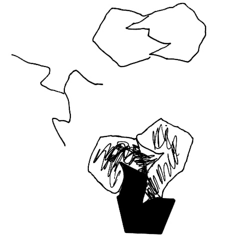
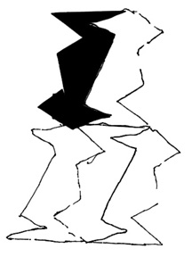
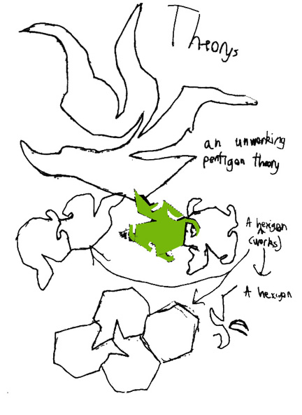
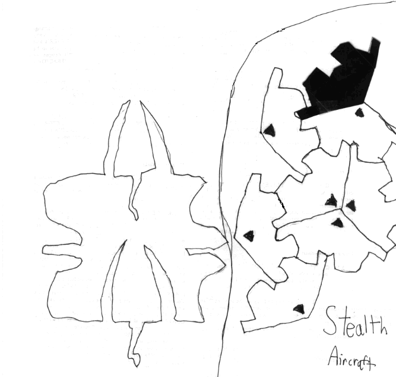
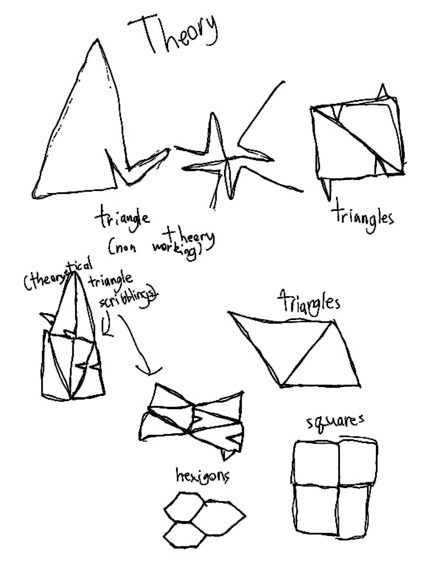
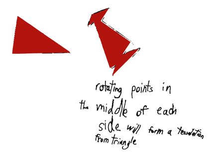
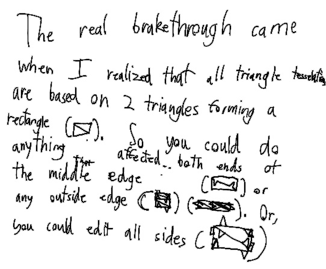
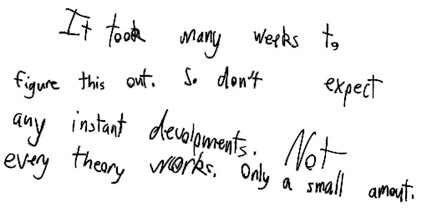

Abe finds a theory to explain tessellations
The following first 6 pages show some of the painstaking work Abe did in cutting out shapes from triangles, squares, pentagons, and hexagons, in trying to explain tessellations. He finally figures some things out on the last two pages.
 
The top below shows an unworking pentagon theory. The bottom two below worked, cut from hexagons.

Below left was cut from a 2-inch square. Below right is the stealth aircraft cut from hexagons




